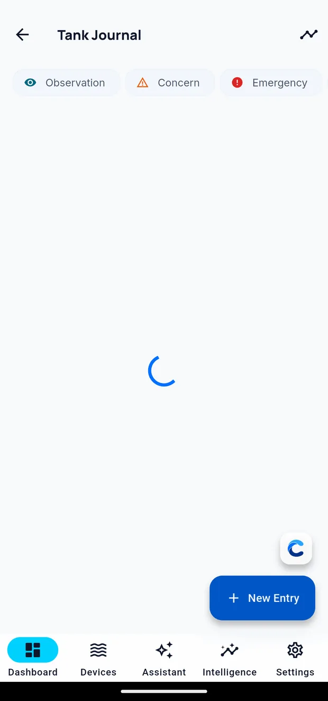

The journal
The journal records what you did to the tank: water changes, livestock additions, dosing changes, equipment work and maintenance.
Its purpose is later comparison. When a parameter moves unexpectedly, the journal is the record of what changed around that date.

Adding an entry
Tap the Journal button floating over the bottom right of the Dashboard.
Write what you did in plain words. Add a photo if it helps — a coral colouring up, a piece of equipment behaving oddly, a test kit result.
You can also dictate an entry rather than typing it, which is the easier option with wet hands. Speak, and what you said is written into the entry for you.
Entries are stamped with the tank and the time automatically.
What to record
The things that turn out to matter most:
- Water changes — how much, and when
- Anything new in the tank — livestock, rock, media
- Dosing changes — what you changed and why
- Equipment — cleaned, replaced, moved, failed
- Maintenance — skimmer cleaned, socks changed, pumps serviced
- Anything unusual — a power cut, a hot day, a spill
Editing and removing entries
Tap an entry to open and change it. To remove one, swipe it and confirm — you are asked first, because an entry you wrote at the time is not reconstructable later.
Asking Cora about an entry
An entry you marked as a concern or an emergency carries an Analyze action. It hands that entry, with the tank's readings around the same date, to Cora Assistant and comes back with an assessment. Use it when you have written down something that worries you and want a second read on it.
Reading it back
The journal is a timeline per tank, newest first. Photos appear inline.
Filter by category to narrow a long journal to one kind of entry — observations, concerns, or emergencies.
The Assistant reads the journal. Questions such as "when did I last change water?" are answered from your entries alongside your readings.
On Cora Max
You can add journal entries on Cora Max as well, which is often more convenient when you are standing at the tank. Reach the journal from the tank menu, or dictate an entry by voice.
Written for Cora Max 0.28.37 and Cora Mobile 0.5.55.
Still stuck? Email cora@coraiq.tech and we'll help.